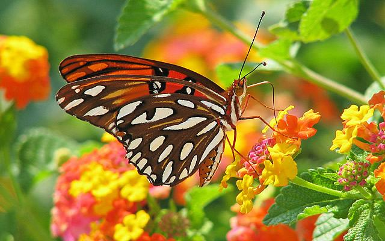
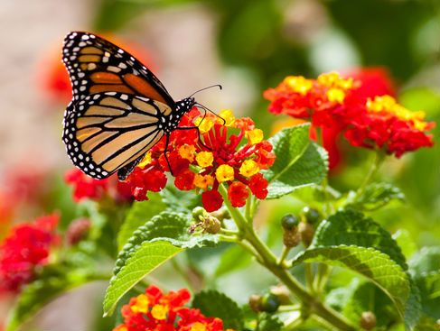

O Início da Primavera 2022 acontece às 22h04 do dia 22 de setembro de 2022. A primavera começa sempre no dia 22 ou 23 de setembro - quando termina o inverno - e acaba em 21 ou 22 de dezembro, dando lugar ao verão. Em 2022, a primavera no Brasil vai de 22 de setembro a 21 de dezembro.
O equinócio da primavera marca o momento exato do início dessa estação. O equinócio é um fenômeno astronômico onde o Sol atinge com maior intensidade as regiões próximas à linha do Equador. Nessa altura do ano, o dia tem a mesma duração no hemisfério norte e no hemisfério sul. O fim da primavera é marcado por outro evento astronômico: o solstício de verão. Este é o período em que o hemisfério sul está inclinado cerca de 23,5º na direção do Sol.
 